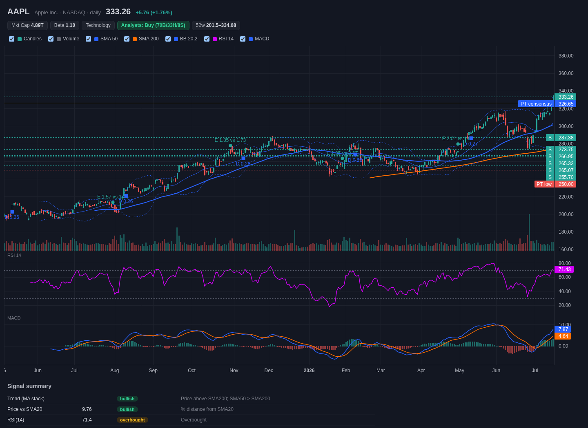
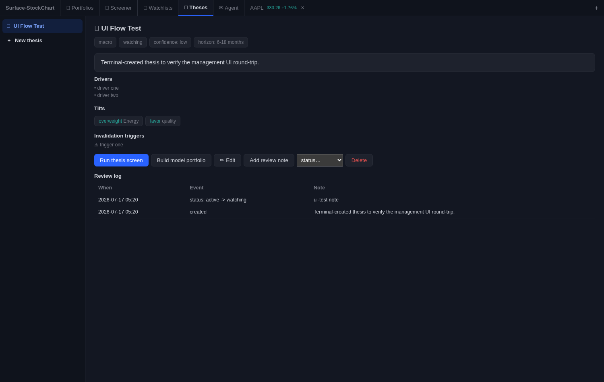

Open Trading SurfaceOpen Trading Surface
Open Trading SurfaceOpen Trading Surface
Open Trading Surface doesn't just fetch data — it maintains a digital twin of the market and hands the agent the controls. The twin discovers an evidence-supported price for every covered name, reconciles it against the price the market discovered, and treats the gap — the residual — as the object of study. A worldview that becomes probability-weighted theses, driver-based company models, and portfolios, all on a surface the agent reads and drives, all on your machine.

The market is a price discovery mechanism, not a forecast. Two ideas follow from taking that seriously — and they compound the longer you use it.
A market price is a clearing level, not a prediction — so the twin's job is explanatory: discover an evidence-supported price per name, reconcile it against the market's discovered price, and attribute every element of the reconciliation. The unexplained remainder — the residual — is tracked as a first-class quantity, because that's where discovery failures, regime signals, and reratings-in-progress live. A structured worldview still becomes theses with auditable probability estimates, and every name is grounded in a driver-based operating model; it all persists and compounds between sessions.
The terminal is a shared world-model: everything you see, the agent can read and drive. It isn't a dashboard a human clicks — it's an operating surface with 230 introspectable tools, an event inbox, reusable playbooks, an audit journal, and research memory. The facts, judgments, and their provenance live in the twin; the agent reasons over them — it never has to be the information store. Ask in plain language; the agent inspects the exact view you're looking at and acts on it.
A worldview at the center — fed by FRED macro, SEC filings, and 13F flows — radiates into theses, company models, and portfolios, and the whole system is reassessed as new evidence arrives. That's the twin: a working model of the market in motion.
The assimilation loop made visible — where the evidence price, the market price, and the difference between them become working surfaces.
The Market tab renders price vs the precision-weighted model composite across every covered NYSE+NASDAQ name — per-model lenses, Δ% or Δ$, scrollable back one recorded trading day at a time. Gap movement is repricing, not dollar flow.
A daily scan classifies where models and prices disagree — names that need a strategic-initiative book, cheap tails routed to erosion review, data defects named as defects — and files a dated report you can slice by cohort.
When the twin's read and the market's reaction disagree, the disagreement is stored — dated, signed, per name — because divergences are the raw material for anticipating repricings when regimes rotate. New activity bubbles up to the feed.
A structured hypothesis test over the model mixture: can a move the current weights cannot explain be explained by shifted weights? That's a rerating in progress — caught as arithmetic, not narrative.
Capital programs and unmaterialized initiatives valued on dated cash-flow lattices with gates, a risk register, an append-only journal, and calibration scoring — plus a daily market-implied belief dial: the success odds today's price implies.
News, transcripts, and filings enter an injection-hardened intake, and each event's estimated price impact is routed through the models it actually touches — absorbed into fundamentals whether or not the market reacted.
Key-executive rows open full profile pages — tenure and roster history, compensation, insider activity, career across companies, news mentions, and agent-authored reports — with roster changes detected daily and alertable.
Every operational constant in the system is registered with its value and its written basis — inspectable, adjustable, and honest about which numbers are measured and which are judgment.
From a market view to a modeled position — top to bottom, all agent-operable.
More than twenty valuation frames behind one interface — every methodology the industry uses, each chartable through time — and on top of them, a weighted Model of Models: an estimator of the mixture of models the market is actually pricing each stock on. Same event, different mixture, different impact — which is why a rate move crushes one name and glances off another on the same day.

Every company can carry a driver-based model calibrated from its filings and consensus. Turn any event into an instant answer.
A maintained worldview feeds candidate theses with explicit, auditable probability estimates and an evidence ledger that updates them as the world changes — the system even proposes its own from FRED macro data.

Price is where a question starts, not where it ends. Overlay the outside world on the chart, then trace any move back to the document behind it.

Build a portfolio from a thesis and the whole chain is recorded, not reconstructed — so months later you can still answer why you own something.

The measurement core professionals expect — verified against closed forms.

Cross-sectional factor composites, an expression language, and relative-valuation tables — well beyond boolean filters.

~125 indicators, 39 drawing tools, every granularity, extended hours — no third-party charting library; the engine is original code. Overlay macro, commodity, financial & SEC-filing series on stacked axes with lead/lag shift.
A type-first alert feed with per-type counts and click-through to each alert's evidence surface; cohort-first subscriptions that decide which alert types fire on which securities; and a unified calendar — typed alerts, SI gates, corporate events, ingest items, divergence entries — as a list or a month grid. Plus playbooks and a morning brief.
Export and install shareable images — reference surfaces, authored model books, configuration packs — with immutable versioned artifacts, checksum verification, and a provenance ledger: imported records never masquerade as your own history. A free starter image bootstraps a fresh install to a working twin.
The peer groups every valuation is measured against — sector, size, index, factor screens, your own lists, or a thesis materialized into a living cohort. Slice the heat map, the repricing report, the alert feed, and the calendar by any of them.
A workspace cockpit, an event inbox, research memory, an audit journal — the agent watches and drafts the work.
Runs locally, keys stay on your machine, security-reviewed, fully test-covered, and it never places a trade.
Download the package, add it in Cowork, and ask the agent to open it.
ots.plugin.ots.plugin file you downloaded, then restart the session.Requires Node.js 18+ (built and tested on Node 22 LTS). Stay current: the plugin tells you when a new version ships. Update & uninstall guide →